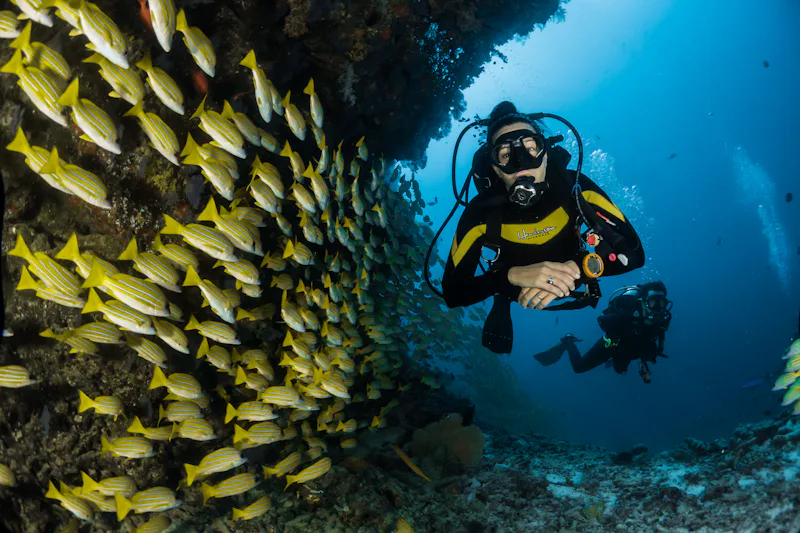

Meet Our Leadership

Marcus Vance
Founder & CEO

Dr. Alisha Reynolds
Chief Marine Biologist

Chen Wei
Head of AI & Engineering
Pioneers in integrating cutting-edge technology with sustainable aquaculture to feed the future.

Founded in 2018, Stackly emerged from a simple realization: traditional aquaculture was struggling to meet global demand without sacrificing environmental integrity.
A group of marine biologists, IoT engineers, and data scientists came together to bridge the gap between nature and technology. Today, we manage over 150 automated farm deployments across three continents, utilizing AI to ensure the highest standards of aquatic health and yield.
To empower aquaculture farmers globally with intuitive, intelligent technology that drastically reduces ecological impact while maximizing production efficiency and animal welfare.
A world where our oceans and freshwater systems are protected through 100% sustainable, tech-driven farming practices that secure a healthy food supply for future generations.
Sustainability isn't a department at Stackly; it's embedded in our code and engineering.
Our Recirculating Aquaculture Systems filter and reuse up to 99% of water, turning solid waste into valuable organic fertilizers.
Our autonomous offshore pens and monitoring buoys run entirely on renewable solar and wave energy.
Through AI modeling, we optimize feeding schedules to eliminate overfeeding, significantly reducing oceanic nutrient pollution.
Stackly was founded in a small lab with a mission to integrate IoT sensors into traditional fish farming enclosures.
Successfully launched our first fully automated commercial aquaculture facility in Norway, reducing mortality by 25%.
Expanded operations to Southeast Asia and South America, pivoting to support sustainable Shrimp and Tilapia farming.
Launched the revolutionary AI-driven predictive health dashboard and Bio-Acoustic monitoring systems globally.
Founder & CEO
Chief Marine Biologist
Head of AI & Engineering